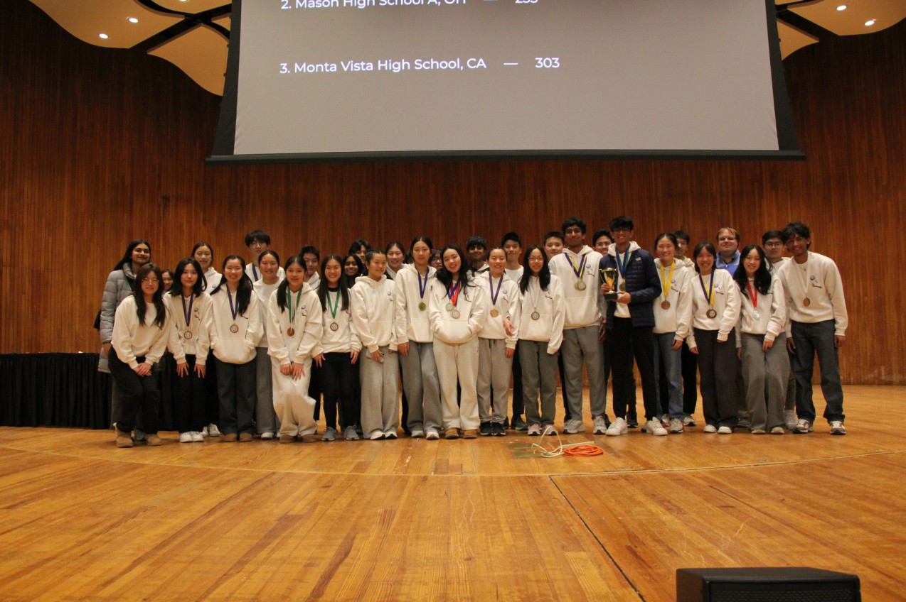

ABOUT
Science Olympiad is a nation-wide competition that features 23 different science-related events. Our coach always compares it to a "track team for SCIENCE." Teams of 15 students compete in pairs or groups of 3 in the various events. They can range from building and engineering to study and lab, covering topics from physics and chemistry to biology and mechanical engineering.
Science Olympiad is a program that promotes strong team bonds, leadership, and above all else, fosters a passion for STEM.
Science olympiad national website
our team

Massachusetts Institute of Technology Invitational, January 25, 2025At Mason, we compete in Division C at the high school. Our club was established in 2003 - since then, we've competed against national-level teams from all around the country, from California to Texas to here in Ohio.
We're one of the most popular, engaging, and rigorous competitive academic clubs at our school. Out of 60 other teams in the state, we have consistently ranked within the top 4 for 14 years. In addition, we have dominated all other teams within the Southwest Cincinnati region, allowing us to have attended the State Tournament in our division at The Ohio State University for the past 20 years. We were crowned State Champions at the Ohio State Tournament held on April 28th, 2018, winning the National-Runner-Up title the first time we attended Nationals at Colorado State University on May 19, 2018. In the 2018-2019 season, we qualified for Nationals at Cornell and succeeded in placing 4th overall with 7 placings total. Unfortunately, due to the Coronavirus Pandemic, the State and National Tournaments scheduled for 2020 were cancelled. Soon after, we were crowned Science Olympiad National Champions, having won the National Tournament in both 2021 and 2022. At the 2023 National Tournament, we finished in 3rd place, and at the 2024 National Tournament, we finished in 7th. In 2025 and 2026, we claimed the 1st place trophy at the State Tournament, going on to achieve 3rd and 12th at Nationals in each year respectively.
NATIONAL TOURNAMENT MEDALS
A year-by-year record of Mason Science Olympiad's national tournament event medals. Select a year to view the event placements and team members.
2026South Califonia University · Los Angeles, Califonia
| Event | Place | Team Members |
|---|---|---|
| Bungee Drop | 5th | Raina Y, Ojas P |
| Chemistry Lab | 4th | Serena T, Neil G |
| Designer Genes | 6th | Sarah W, Marley F |
| Helicopter | 3rd | Alice C, Annie L |
| Hovercraft | 2nd | Alice C, Raina Y |
| Robot Tour | 6th | Raina Y, Angela T |
| Water Quality | 6th | Sarah W, Chloe Z |
2025Nebraska State University · Lincoln, Nebraska
| Event | Place | Team Members |
|---|---|---|
| Air Trajectory | 1st | Alice C, Annie L |
| Chmeistry Lab | 4th | Annie L, Mingjia Z |
| Codebusters | 4th | Aneesh I, Jayden L, Yeming Y |
| Forensics | 5th | Mingjia Z, Yeming Y |
| Optics | 1st | Aneesh I, Mingjia Z |
| Robot Tour | 5th | Angela T, Raina Y |
| Tower | 2nd | Liheng W, Raina Y |
| Wind Power | 2nd | Alice C, Nikhil J |
2024Michigan State University · East Lansing, Michigan
| Event | Place | Team Members |
|---|---|---|
| Air Trajectory | 4th | Alice C, Raymond W |
| Chemistry Lab | 3rd | Ian S, Mingjia Z |
| Codebusters | 2nd | Aneesh I, Jayden L, Shriya P |
| Flight | 4th | Alice C, Raymond W |
| Forestry | 6th | Lance Z, Sarah W |
| Fossils | 3rd | Lance Z, Luke L |
| WIDI | 1st | Alice C, Grace C |
2023Wichita State University · Wichita, Kansas
| Event | Place | Team Members |
|---|---|---|
| Bridge | 5th | Aaron F, Katie W |
| Detector Building | 1st | Grace C, Samvit D |
| Disease Detectives | 1st | Adhira S, Jonathan L |
| Dynamic Planet | 6th | Jonathan L, Katie W |
| Environmental Chemistry | 5th | Mingjia Z, Shin-yi W |
| Experimental Design | 1st | Annie Y, Grace C, Matthew Q |
| Fermi Questions | 5th | Amir A, Samvit D |
| Flight | 3rd | Aaron F, Raymond W |
| Forensics | 6th | Adhira S, Mingjia Z |
| Green Generation | 6th | Adhira S, Nikhil J |
| WiFi Lab | 2nd | Nikhil J, Samvit D |
2022California Institute of Technology · Pasadena, California
| Event | Place | Team Members |
|---|---|---|
| Astronomy | 1st | Amir A, David Z |
| Codebusters | 2nd | Amir A, Neev G, William L |
| Detector Building | 1st | Samvit D, Sankalp A |
| Dynamic Planet | 6th | Jonathan L, Katie W |
| Forensics | 1st | Jessica L, Kunal A |
| It's About Time | 4th | Samvit D, Sankalp A |
| Ornithology | 1st | Kunal A, Michelle C |
| Ping Pong Parachute | 1st | Neev G, William L |
| Remote Sensing | 1st | David Z, Nikhil J |
| WiFi Lab | 6th | Neel S, Samvit D |
| Wright Stuff | 6th | David Z, Nishita T |
2021Arizona State University · Tempe, Arizona
| Event | Place | Team Members |
|---|---|---|
| Astronomy | 2nd | Katie W, Michelle C |
| Astronomy | 6th | Amir A, David Z |
| Boomilever | 2nd | Ravi B, William L |
| Chemistry Lab | 1st | Kunal A, William L |
| Circuit Lab | 1st | Samvit D, Sankalp A |
| Codebusters | 5th | Amir A, Neev G, William L |
| Experimental Design | 5th | Jessica L, Neev G, Yuv S |
| Forensics | 2nd | Kunal A, Yuandi H |
| Fossils | 2nd | Amir A, Kevin R |
| Machines | 5th | Samvit D, Sankalp A |
| Sounds of Music | 6th | David Z, William L |
| Water Quality | 2nd | Adhira S, Katie W |
| Write It Do It | 5th | David Z, Neev G |
2020National Tournament Cancelled
National Tournament was Cancelled due to COVID-19.
2019Cornell University · Ithaca, New York
| Event | Place | Team Members |
|---|---|---|
| Anatomy & Physiology | 2nd | Jenny H, Maanasa M |
| Circuit Lab | 4th | Allen Y, Richard L |
| Code Busters | 4th | Aadit M, Sruthi P, William L |
| Experimental Design | 6th | Alisa Z, Jennifer Z, Kevin S |
| Mission Possible | 4th | Daniel X, William L |
| Thermodynamics | 4th | Allen Y, Kevin S |
| Water Quality | 6th | Aadit M, Emily F |
2018Colorado State University · Fort Collins, Colorado
| Event | Place | Team Members |
|---|---|---|
| Anatomy & Physiology | 1st | Alex W, Jenny H |
| Astronomy | 2nd | Emily F, Jeffrey H |
| Chemistry Lab | 2nd | Allen Y, Jeffrey H |
| Ecology | 5th | Jack L, Jenny H |
| Forensics | 4th | Daniel X, Jeffrey H |
| Helicopters | 4th | Alex W, Alyson L |
| Microbe Mission | 1st | Jenny H, Ranjani R |
| Optics | 3rd | Allen Y, Emily F |
| Remote Sensing | 3rd | Alex W, Jenny W |
| Towers | 3rd | Nolan S, Terry L |